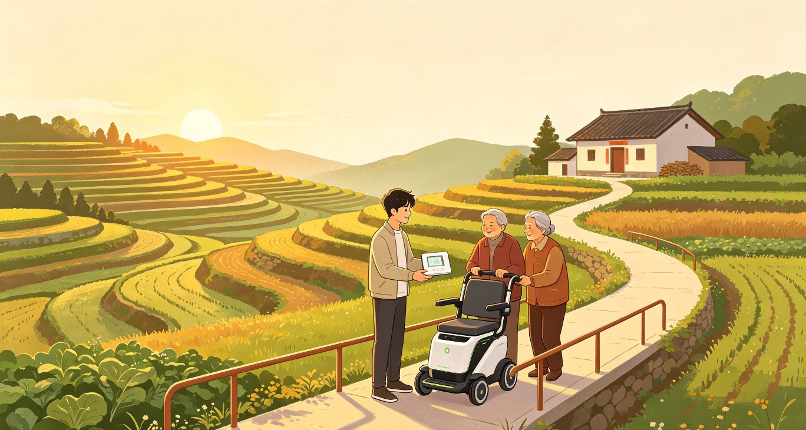

我和我的家乡
一套面向农村家庭的温暖科技方案：让父母少弯一次腰，让高龄老人多走一段安心路。
从家门口开始的创作
我的家乡不是一个抽象的地名，而是父母每天弯腰劳作的土地，是老人想出门却担心摔倒的村路。
这份作品希望把技术从“看起来很远的未来”带回家门口。它不是为了炫技，而是为了解决那些反复发生、却常常被忽视的小困难：播种、搬运、除草、收晒里的体力消耗，雨后泥路、台阶门槛、夜间出行里的安全风险。
乡村里的真实需求
很多家庭的难处并不宏大，却很具体：劳作靠人力，照护靠家人，出行靠经验。我的创作从这些具体场景出发。
父母劳作强度高
小地块、分散农田和季节性赶工，让许多农活仍然依赖肩挑、手推、长时间弯腰。
老人出行半径小
高龄和行动不便让老人不敢走远，村口、卫生室、邻里串门都可能变成一次“风险决策”。
改造缺少系统性
单点工具能缓解一时，但真正有效的方案需要把农机、道路、家门口和照护提醒连成整体。
两条线，服务一个家乡
作品由“辅助父母劳作的农业机械”和“农村适老化出行改造”两部分组成，既帮助家庭减负，也让老人更安全地参与乡村生活。
轻量化农业辅助机械
面向小规模农田和家庭菜园，设计可拆装、可推行、易维护的多功能农机底盘，搭配搬运、播撒、除草、喷洒等模块，降低重复体力劳动。
省力搬运
把肥料、菜筐、农具从“人背肩扛”变为“低速助力推行”。
模块替换
同一个底盘适配不同农时任务，减少购买多台设备的成本压力。
低门槛操作
以大按钮、清晰提示、低速安全策略为基础，让父母也能放心上手。
农村适老化出行系统
围绕“从家门到村口”的日常路径，进行坡道、防滑、扶手、夜间照明、休息点与辅助出行设备设计，让行动不便老人重新拥有出门的信心。
连续无障碍路径
重点处理门槛、台阶、陡坡、泥滑路面，让危险点变成可通过点。
可坐可扶的移动工具
结合助行、短途代步和临时休息，适配农村老人慢速、短距、高安全需求。
邻里照护提醒
通过简单状态提示，让家人知道老人是否安全到达、是否需要帮助。
从想法到原型
我会把作品拆成可验证的小步骤，先解决最真实、最高频、最容易被家人感受到的场景。
走访与记录
记录父母一周内最累的农活、老人最常走的路线和最害怕的风险点。
低成本原型
先制作推行底盘、搬运模块、坡道样段和辅助扶手，验证省力与安全性。
真实场景测试
邀请父母、老人和邻里试用，重点观察操作是否简单、路径是否安心、维护是否方便。
迭代成展示作品
用 TRAE 辅助完成设计说明、结构草图、交互界面、演示页面和报名材料整合。